Astronomia (AST0001) · Curso de Física · UDESC
Telescópios, detectores e observação multi-banda
Aula 7 · Capítulo 7 · da frente de onda ao elétron contado
Prof. Dr. Rafael Camargo Rodrigues de Lima · 2026/2
A cadeia inteira, em ordem
fonte → atmosfera → óptica → filtro ou dispersor → detector → calibração → grandeza física
Cada elo impõe um limite próprio, e o elo mais fraco decide o resultado.
Um telescópio de 8 m sob seeing ruim entrega a resolução de um de 15 cm. Um detector mal amostrado joga fora o que a óptica entregou. Uma calibração malfeita transforma um gradiente do instrumento em descoberta astrofísica.
O que esta aula supõe
- Ângulos e pequenos ângulos — Capítulo 1
- Fluxo, magnitudes, cor e extinção — Capítulo 2
- Bias, dark, flat e a flutuação √N — Capítulo 3, e desta vez como ferramenta, não leitura complementar
- Ponto de Lagrange L₂ — Capítulo 5
- Energia de fóton, Wien, Planck, Doppler e desvio para o vermelho — Capítulo 6
Três ferramentas a aula introduz, porque os capítulos anteriores não trazem: superposição e interferência; frequência espacial e amostragem; e transformada de Fourier, só no grau necessário para dizer o que um interferômetro mede.
Ondas somam amplitudes, não intensidades
Quase tudo o que limita um telescópio — difração, interferometria, grades, seeing — é consequência de uma única propriedade da luz.
Duas contribuições que chegam ao mesmo ponto somam-se amplitude a amplitude. O que se mede é o quadrado da soma.
E aparece um termo que não existiria somando intensidades
Vale 4E₀² quando as fases coincidem — quatro vezes uma onda isolada, não duas — e zero quando diferem de π. É esse cos Δφ que produz franjas, anéis de difração e todo o resto.
A fase vem de uma diferença de caminho
Duas fendas: guarde esta relação
Ela reaparece três vezes nesta aula: na grade de difração, com N fendas em vez de duas; no interferômetro de rádio, com d substituído pela linha de base; e, em forma contínua, na difração por uma abertura.
Coerência: por que isso funciona com luz estelar
Luz estelar é incoerente na fonte: cada átomo emite por conta própria.
O que torna a interferometria astronômica possível é que as duas contribuições são a mesma frente de onda amostrada em dois pontos — e aí a coerência entre elas carrega informação sobre o tamanho angular da fonte.
É o conteúdo do teorema de van Cittert–Zernike, que volta no fim da aula.
Como um telescópio converte direção em posição
(a) Duas fontes separadas por θ produzem imagens separadas por x = f θ: a distância focal é o fator de conversão, e a abertura não entra nesta relação. (b) A escala de placa em segundos de arco por milímetro.
Duas grandezas independentes
A abertura D fixa quanta luz entra; a distância focal f fixa o tamanho da imagem.
A razão f/D controla a concentração de luz por unidade de área do detector.
Um cuidado que evita metade dos erros desta parte
Um detector com pixels de lado p cobre uma escala angular por pixel de p/f.
Esse número não é a resolução do instrumento. É o tamanho do passo de amostragem.
Resolução óptica e amostragem são grandezas diferentes, limitadas por coisas diferentes. Voltaremos a isso de forma quantitativa.
O padrão de Airy
A versão contínua da soma de fases: integrar a contribuição de cada elemento da abertura, cada uma com sua fase. J₁ é a função de Bessel de primeira espécie e ordem um.
E o fator 1,22 não é convenção
É 3,8317/π — a primeira raiz de J₁. O critério de Rayleigh define duas fontes como resolvidas quando o máximo de uma cai sobre o primeiro zero da outra.
A imagem de uma fonte pontual
(a) 84% da energia dentro do primeiro anel escuro; o resto espalha-se nos anéis, e é isso que domina o imageamento de alto contraste. (b) No limite de Rayleigh o vale entre os picos é raso mas existe. (c) As mesmas duas fontes sob seeing e com óptica adaptativa.
As hipóteses, que raramente são ditas
- Abertura circular, ideal e não obstruída
- Luz monocromática, sistema sem aberrações
- Um espelho segmentado tem difração dos vãos e das hastes; uma obstrução central tira energia do disco e põe nos anéis
- 1,22 λ/D é o melhor caso — e Rayleigh é uma convenção, não uma lei
Fontes de brilhos muito diferentes podem ser indistinguíveis bem acima do critério; um ajuste de modelo com sinal/ruído alto localiza um centroide bem abaixo dele.
Exemplo: 2 m em 500 nm
Da superfície terrestre a turbulência quase sempre piora isso em uma ordem de grandeza — e é essa diferença, não a falta de espelhos grandes, que motivou telescópios espaciais e óptica adaptativa.
A atmosfera entra antes do espelho
A turbulência embaralha a frente de onda. Da teoria de Kolmogorov emerge uma escala característica: o comprimento de Fried r₀, o diâmetro sobre o qual a frente de onda ainda está plana.
Em bons sítios, r₀ ≃ 10–20 cm em 500 nm.
A largura entregue
Para D ≫ r₀ e exposições longas, essa largura não depende de D: um telescópio de 8 m sem correção entrega a resolução angular de um de 15 cm. Ganha-se em coleta de luz, não em detalhe.
Três escalas, e são estimativas — não fórmulas
r₀ cresce com λ^(6/5), logo o seeing melhora com λ^(−1/5): devagar. τ₀ fixa a frequência mínima de correção, alguns milissegundos. θ₀ é a separação máxima entre alvo e estrela-guia, poucos segundos de arco no visível.
Óptica adaptativa: o que o laser faz, e o que não faz
Mede-se a deformação com uma estrela de referência e corrige-se com um espelho deformável, centenas a milhares de vezes por segundo.
A estrela-guia pode ser natural. Quando não há nenhuma perto o bastante — o que, dado θ₀, é a maior parte do céu — cria-se uma artificial com laser.
O laser portanto não é requisito da técnica: é o que amplia a cobertura do céu.
Sistemas com várias estrelas-guia e vários espelhos deformáveis corrigem campos bem maiores que θ₀. Foi com AO no infravermelho que se acompanharam, do solo, as órbitas em torno de Sagitário A* — Nobel de 2020.
Explorar: resolução e amostragem
Duas estrelas a uma separação fixa. Mude abertura, comprimento de onda, seeing e o tamanho do pixel: o veredito no alto separa o que a óptica entrega do que o detector registra.
Onde a atmosfera deixa passar
Esquema qualitativo — as larguras reais dependem sobretudo do vapor de água e da altitude. Raios X, gama e a maior parte do UV são absorvidos: são faixas exclusivamente espaciais. Não é só o seeing que leva telescópios ao espaço; em boa parte do espectro não há o que observar do solo.
Frequência espacial: o que a óptica transmite
Uma imagem pode ser descrita por suas frequências espaciais: estrutura grande é frequência baixa, detalhe fino é frequência alta.
Um telescópio limitado por difração transmite até um limite e nada acima dele.
A frequência de corte
Em unidades angulares, D/λ ciclos por radiano. Acima disso a óptica não entrega nada — a informação não está lá para ser perdida.
E daí sai Nyquist
Um sinal cuja maior frequência é f_c fica completamente determinado por amostras tomadas a esse passo. Em escala angular por pixel: p/f ≤ λ/2D.
A regra de bolso é próxima — mas não é o teorema
Dois pixels por elemento de resolução, com θ_res = 1,22 λ/D, permite pixels 22% maiores que o limite rigoroso. E sobretudo mistura duas coisas: o raio de Rayleigh é escala de resolução óptica; Nyquist é condição sobre frequência de corte.
Por que o tamanho do pixel importa
(a) Com p = 1,5 fλ/D o perfil medido depende de onde a grade de pixels calha de cair: deslocando meio pixel, o pico cai de 0,66 para 0,35 sem que nada tenha mudado no céu. (b) Um sinal de 9 ciclos amostrado em 11 pontos é lido como um de 2 ciclos — a frequência alta não some, ela se disfarça.
Os dois lados do erro
- Subamostrar: duas cenas diferentes produzem os mesmos números. Em uma exposição isolada, não há volta
- Mas há volta com várias: deslocamentos sub-pixel conhecidos (dithering) amostram posições intercaladas — é assim que opera boa parte do imageamento do Hubble
- Superamostrar também custa: os mesmos fótons em mais pixels, e cada pixel traz seu ruído de leitura
Existe um ótimo — e é por isso que câmeras astronômicas profissionais são projetadas junto com o telescópio, não escolhidas depois.
Quatro números descrevem um detector
- Eficiência quântica η(λ) — fração dos fótons que vira elétron detectado; passa de 90% em CCDs no visível, e cai nas bordas da banda
- Ganho g — elétrons por unidade digital. Toda análise de ruído tem de ser feita em elétrons
- Capacidade de poço — máximo de elétrons antes de saturar; a resposta deixa de ser linear bem antes do limite nominal
- Ruído de leitura σ_L — elétrons RMS por pixel por leitura, independente do tempo de exposição
A razão entre capacidade de poço e ruído de leitura é a faixa dinâmica: quantos níveis distinguíveis cabem entre o mais fraco e o mais brilhante que o detector mede sem saturar.
Nenhum detector é neutro
Resposta que varia com λ e com a posição no chip, pixels defeituosos, não linearidade perto da saturação, raios cósmicos.
No imageamento óptico e infravermelho o procedimento típico é subtrair bias e dark, dividir por flat e rejeitar outliers. Em raios X ou rádio a cadeia é outra, com os mesmos objetivos.
Calibração não é burocracia, é parte do resultado físico. Isso reaparece no Capítulo 19.
Escreva tudo em elétrons, e some a ambiguidade
η é a eficiência quântica — e, mais honestamente, a eficiência total do sistema: atmosfera, espelhos, filtro e detector.
A equação de sinal/ruído
n_pix é o número de pixels somados na abertura, Ḃ a taxa de céu por pixel, Ḋ a corrente escura e n_exp o número de leituras que compõem o tempo total. Duas hipóteses ficam de fora: a incerteza da estimativa do céu, e erros de calibração — que não caem com √t.
Dois regimes
Dobrar a qualidade da medida custa quadruplicar o tempo. No regime de céu, a penalidade é a raiz do brilho do céu — daí observatórios longe de cidades e instrumentos infravermelhos criogênicos.
Onde está a decisão prática
- Para tempo total fixo, muitas exposições curtas aumentam o ruído de leitura total
- Fonte fraca: isso é caro — exponha longamente
- Fonte brilhante: o termo é desprezível, e fracionar não traz vantagem estatística
- Mas traz outras, todas boas: evita saturação, permite rejeitar raios cósmicos, mede variabilidade
A escolha é sobre o que se quer medir, não sobre sinal/ruído.
Espectrógrafo
(a) Fenda, colimador, grade, câmera, detector. (b) Um par de linhas próximas em três poderes resolventes: em 𝓡 = 1000 há só uma depressão rasa; em 60 000 as duas componentes se separam. A assimetria em resolução intermediária é o sinal de que há estrutura não resolvida.
A grade: a mesma condição de fase, com N fendas
Quanto maior a ordem e menor o espaçamento, mais o espectro se abre.
Poder resolvente


𝓡 caligráfico para não confundir com o ruído de leitura. Em velocidade: 300 km/s para 𝓡 = 10³, 30 km/s para 10⁴, 3 km/s para 10⁵.
𝓡 = mN é o limite da grade, não a resolução do instrumento
A resolução entregue é fixada pelo elo mais fraco: largura da fenda projetada no detector, qualidade da óptica, amostragem, perfil instrumental resultante.
Um espectrógrafo com grade excelente e fenda larga entrega muito menos que mN.
Na prática mede-se 𝓡 pela largura de linhas de uma lâmpada de calibração — e é esse número, não o da grade, que vale.
Resolução não é precisão
Busca de exoplanetas: precisão abaixo de 1 m/s com 𝓡 ∼ 10⁵, isto é, elemento de resolução de 3 km/s. Três mil vezes maior que a precisão obtida.
Não há contradição: o elemento de resolução é a largura do perfil instrumental; a precisão é com que incerteza se localiza o centro dele. O que a estatística não garante é exatidão — calibração estável por anos, controle térmico e de pressão, fibra, e manchas e granulação da própria estrela produzem alguns m/s que imitam planetas. A estatística dá o piso; os sistemáticos decidem.
Em rádio, λ/D é severo
Uma antena de 100 m observando em 1,3 mm:
Pior que o seeing de um sítio óptico comum. (A rigor, uma antena desse porte dificilmente opera em 1,3 mm: a superfície precisa ser lisa dentro de uma fração pequena do comprimento de onda.)
Dois elementos, uma linha de base
(a) A frente de onda chega inclinada: a diferença de percurso é a projeção da linha de base sobre a direção da fonte. (b) Um período de franja a cada λ/B. (c) A rotação da Terra faz cada par varrer uma elipse no plano uv — e o que não está coberto também importa.
A mesma relação das duas fendas


A resolução passa a ser fixada pela separação entre antenas, não pelo diâmetro de cada uma. Com B da ordem do diâmetro da Terra, o EHT chega a ~20 µas em 1,3 mm — o suficiente para a sombra de M 87 e a de Sagitário A*.
Três grandezas que não andam juntas
- A resolução depende das maiores linhas de base projetadas
- A sensibilidade depende da área coletora total das antenas — acrescentar antenas aumenta área e resolução ao mesmo tempo
- A recuperação de emissão extensa depende das menores linhas de base
Dizer que 'se troca área coletora por resolução' só vale comparando com uma abertura cheia do tamanho de todo o arranjo, que ninguém constrói. Um arranjo sem espaçamentos curtos é cego para estrutura angular grande — é o buraco central do plano uv, e por isso o ALMA combina o arranjo principal com antenas compactas e antena única.
O que o interferômetro mede, sem usar Fourier
Cada par de antenas mede uma escala angular e uma orientação: “quanto contraste a fonte tem em listras desta largura e nesta direção?”
Linhas de base longas perguntam por listras finas; linhas curtas, por listras largas.
Formalmente é o teorema de van Cittert–Zernike: a visibilidade complexa é a transformada de Fourier do brilho do céu, avaliada em B⊥/λ. Reconstruir a imagem é inverter uma transformada amostrada de forma incompleta — problema sem solução única, daí o CLEAN, e daí uma imagem interferométrica ser sempre em parte uma reconstrução.
Em rádio, potência vira temperatura
Porque no limite de Rayleigh–Jeans a intensidade é proporcional a T.
O fator 2 aparece porque uma antena coleta apenas uma polarização. A temperatura de sistema soma todas as contribuições de ruído na mesma unidade: receptor, atmosfera, solo captado pelos lóbulos laterais, fundo do céu e a própria fonte.
A equação do radiômetro
Este é o ruído de 1σ, não um limiar de detecção: anúncios costumam exigir 5σ, e um limite superior publicado precisa dizer a quantos sigmas corresponde. Para arranjos entram fatores de número de antenas e ponderação, mas a dependência (Δν t)^(−1/2) permanece.
Banda larga nem sempre ajuda
Aumentar área, banda ou tempo melhora a sensibilidade — os dois últimos só com a raiz quadrada.
Mas o ganho com Δν vale para contínuo, em que o sinal ocupa toda a banda. Para uma linha estreita, alargar a banda total não traz nada.
O que conta é a largura de canal comparada à largura da linha. Canais muito mais largos diluem o sinal; muito mais estreitos desperdiçam sensibilidade. A banda relevante é sempre a ocupada pelo sinal que se procura.
O que cada faixa entrega
- Rádio — gás frio, elétrons relativísticos em campos magnéticos, a linha de 21 cm
- Infravermelho — atravessa poeira; objetos frios, discos, estrelas jovens
- Visível — linhas atômicas, astrometria e fotometria de precisão
- Ultravioleta — estrelas quentes e gás ionizado
- Raios X e gama — acreção, choques, plasmas quentes, eventos extremos
A astrofísica é multiobservacional porque nenhuma faixa conta a história inteira — e porque boa parte delas só é acessível do espaço.
As técnicas também se dividem — e não há hierarquia
- Fotometria alcança objetos muito mais fracos; espectroscopia espalha os mesmos fótons por muito mais pixels
- Imagem dá morfologia e posição, que nenhum espectro recupera
- Polarimetria dá orientação de campos magnéticos e geometria de espalhamento
- A escolha da técnica é parte do desenho da observação
Variabilidade dá tamanho — com hipóteses
Se um objeto varia coerentemente em Δt, a região responsável dificilmente é muito maior que c Δt. Foi assim que se concluiu que núcleos ativos são compactos. Mas: vale para uma região que varia como um todo; em fontes relativísticas o efeito de feixe encurta o tempo observado; e em objetos distantes a dilatação cosmológica o alonga por (1+z).
Exemplo guiado: um deslocamento de 1 nm
Pode indicar movimento orbital, ejeção, rotação, recessão — ou que a linha foi identificada errado. A primeira verificação é sempre se outras linhas do mesmo objeto mostram o mesmo deslocamento relativo.
JWST: por que infravermelho, e o preço térmico
Um telescópio a 300 K emite com pico exatamente onde se quer observar.
Daí o para-sol de cinco camadas, que mantém o lado frio abaixo de 50 K passivamente, e o criorrefrigerador do MIRI, perto de 7 K. Órbita, para-sol e espelho dobrável decorrem de uma exigência de física de corpo negro.
Comparar JWST e Hubble, com as hipóteses à mostra
O que é: uma razão de áreas coletoras — e 'área coletora' admite definições diferentes (geométrica, desobstruída, efetiva), que mudam o número em dezenas por cento. O que não é: um ganho universal de tempo. Isso exige mesma fonte, mesma banda, eficiências comparáveis e ruído dominado pela fonte.
E a comparação de resolução tem a mesma armadilha
- Em 2 µm: 0,077″ para 6,5 m e 0,21″ para 2,4 m — comparação de duas aberturas, não de dois instrumentos
- A câmera infravermelha do Hubble vai até ~1,7 µm: 2 µm não é banda comum
- Em 0,5 µm o Hubble dá 0,05″ e o JWST não observa
- Há sobreposição real no infravermelho próximo — as regiões cobertas são parcialmente distintas
É por isso que os dois continuam sendo usados, muitas vezes no mesmo programa.
Rubin e Gaia: os dois outros modos de mudar a escala
- Rubin — 8,4 m, câmera de 3,2 gigapixels, 9,6 graus quadrados por exposição; dez anos cobrindo da ordem de 18 000 graus quadrados
- O salto é sobretudo de cadência: o céu deixa de ser retrato e vira filme
- Gaia — 1,8 bilhão de estrelas, dezenas de µas; observações encerradas em 2025, catálogos em publicação
- Uma fração muito grande das distâncias estelares usadas hoje apoia-se, em algum ponto, nessa calibração
Métodos independentes continuam existindo — paralaxes de rádio por VLBI, binárias eclipsantes, isócronas de aglomerados — e são justamente eles que permitem testar o Gaia em vez de apenas confiar nele.
Um exercício que vale fazer agora
Que r₀ seria preciso para que o seeing igualasse a difração do ELT em 2,2 µm?
Cerca de 200 vezes o valor real em bons sítios. Sem óptica adaptativa, um telescópio de 39 m entregaria a resolução de um de 15 cm — e os outros 38,85 m serviriam apenas para coletar luz.
E um que mostra onde o próprio modelo quebra
Com erro residual de 0,3% no flat, que não diminui com o tempo:
A 500 e⁻/s, isso são 222 s. A partir daí o sistemático domina e o sinal/ruído satura em torno de 200, por mais que se exponha. A pergunta deixa de ser “quanto tempo exponho?” e passa a ser “como melhoro a calibração?”.
O projeto do capítulo
A Nebulosa do Caranguejo em três janelas, com o mesmo centro e o mesmo campo, pelo SkyView: DSS2 Red, 2MASS K e NVSS.
Tabela de metadados, três painéis anotados, e uma estrutura ausente em uma banda: é física ou é instrumental?
A pergunta principal não é “qual imagem serve para medir massa?”. É que informação adicional e que modelo seriam necessários — e a resposta esperada é reconhecer que nenhuma banda entrega massa ou idade sozinha.
O que fica do Capítulo 7
- Difração, interferometria, grades e seeing são todos o mesmo fato: ondas somam amplitudes
- Resolução é da óptica; amostragem é do pixel. O resultado é o pior dos dois
- Em interferometria, resolução, sensibilidade e escalas grandes dependem de coisas diferentes
- Toda equação de ruído desta aula supõe sistemáticos desprezíveis — e eles acabam mandando
Painel:
telescopio-resolucao. No Capítulo 8: a luz medida vira estrutura estelar, e o diagrama HR organiza tudo.